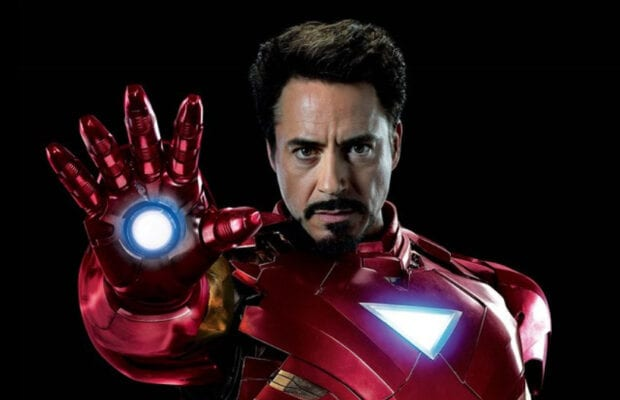

MARVEL CINEMATIC STUDIOS
About Iron Man


Iron Man is a 2008 American superhero film based on the Marvel Comics character of the same name. Produced by Marvel Studios and distributed by Paramount Pictures,[N 1] it is the first film in the Marvel Cinematic Universe (MCU). Directed by Jon Favreau from a screenplay by the writing teams of Mark Fergus and Hawk Ostby, and Art Marcum and Matt Holloway, the film stars Robert Downey Jr. as Tony Stark / Iron Man alongside Terrence Howard, Jeff Bridges, Shaun Toub, and Gwyneth Paltrow. In the film, following his escape from captivity by a terrorist group, world famous industrialist and master engineer Tony Stark builds a mechanized suit of armor and becomes the superhero Iron Man.
A film featuring the character was in development at Universal Pictures, 20th Century Fox, and New Line Cinema at various times since 1990, before Marvel Studios reacquired the rights in 2006. Marvel put the project in production as its first self-financed film, with Paramount Pictures distributing. Favreau signed on as director in April 2006, and faced opposition from Marvel when trying to cast Downey in the title role; the actor was signed in September. Filming took place from March to June 2007, primarily in California to differentiate the film from numerous other superhero stories that are set in New York City-esque environments. During filming, the actors were free to create their own dialogue because pre-production was focused on the story and action. Rubber and metal versions of the armor, created by Stan Winston's company, were mixed with computer-generated imagery to create the title character.
Read Here